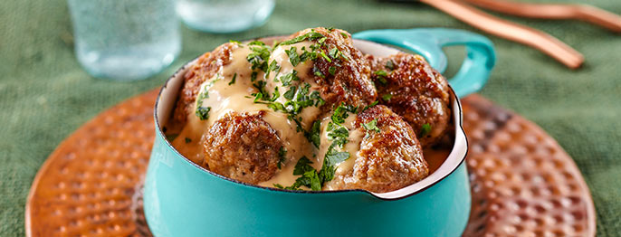

Odin's Hefty Meatballs

Description
What's Odin most proud of in his recipe books and nurtures their valiant ones?
The answer is simple: Odin's Hefty Meatballs! It's juicy, it's satiating, and best of all, it makes you one of us!
Ingredients
- 1 lb (454 g) lean ground beef
- ½ lb (227 g) ground pork
- 1 lg egg
- ¾ C (60 g) panko
- 1 tsp (5 g) salt
- ½ tsp (1 g) pepper
- ¼ tsp (0.6 g) nutmeg
- ¼ tsp (0.5 g) ginger
- ⅛ tsp (0.6 g) allspice
- ½ C (118 ml) milk
- 1 C (201 g) yellow onion, minced
- ¼ C (10 g) fresh parsley, chopped
- 6 T (86 g) butter, divided
- ¼ C (31 g) flour
- 4 C (946 ml) low sodium chicken broth
- ¼ C (118 ml) red wine
Steps
- Combine beef, pork and egg in a large bowl; make a well in the center and add breadcrumbs, salt, pepper, ginger, allspice and milk; let stand 2 minutes.
- Add onion and parsley and mix together with your hands until completely incorporated; form into 1-inch (25-mm) balls.
- Place 2 T (29 g) butter in a large skillet over medium high, and working in batches, brown meatballs on all sides until cooked through, about 8 minutes per batch.
- Transfer to a serving bowl; cover loosely to keep warm.
- Reduce heat to medium, place remaining butter in skillet, add flour and stir to form a thick paste.
- Cook, stirring constantly, 2 minutes; then whisk in broth and wine.
- Bring to a boil, reduce heat; simmer until thickened, about 7 minutes.
- Pour over meatballs, tossing to coat. Serve immediately.
Skald! This is the only way to feed yourself and honoured guests!